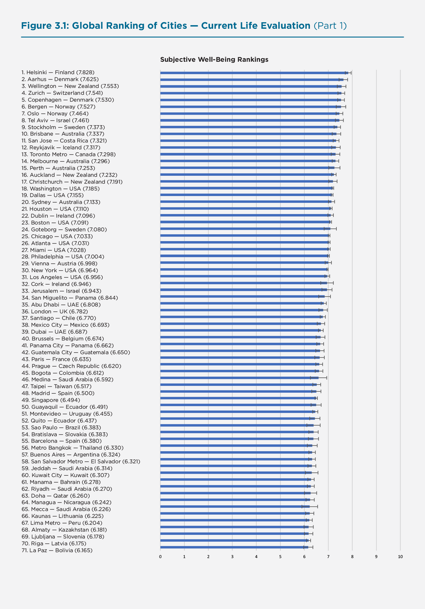
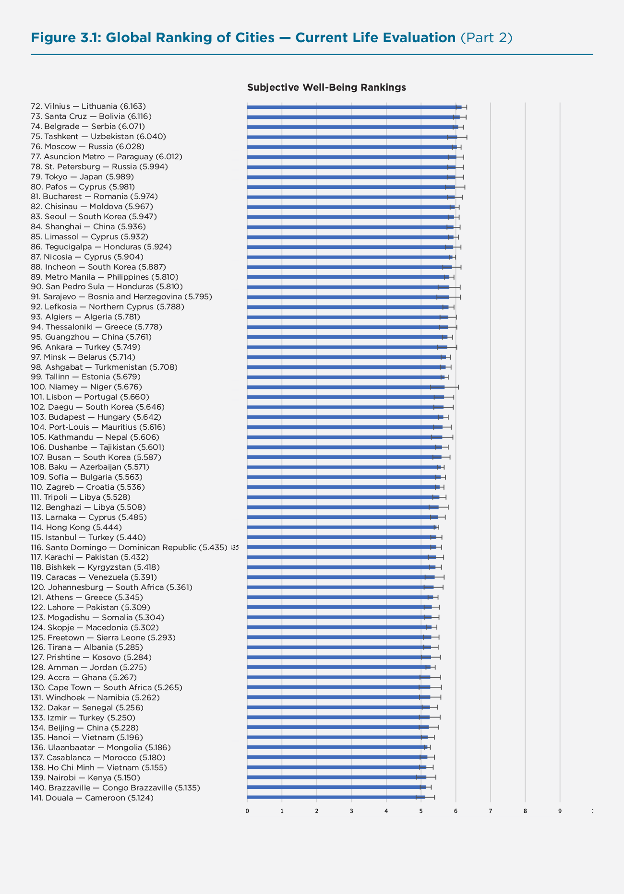
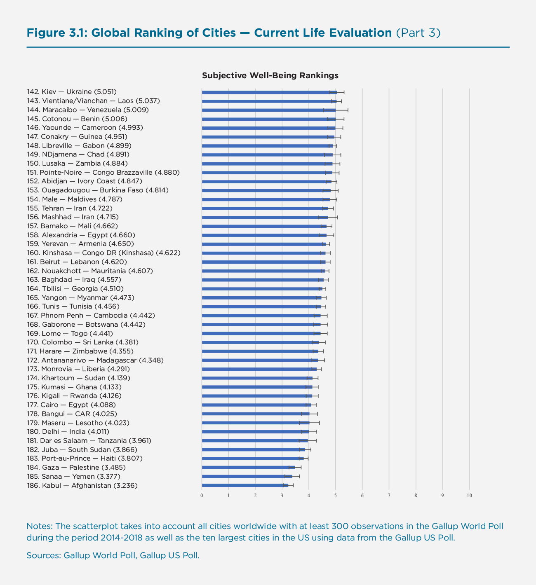
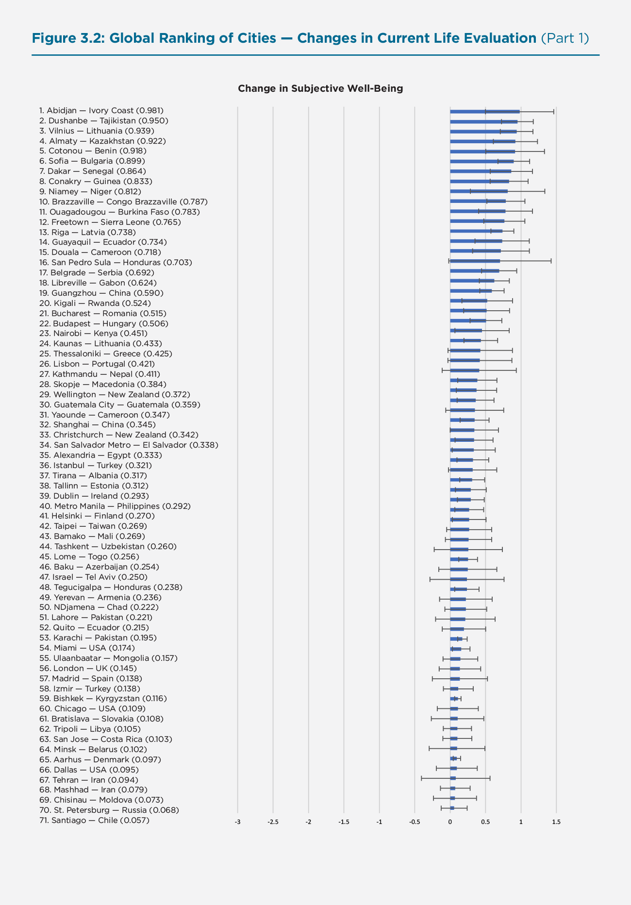
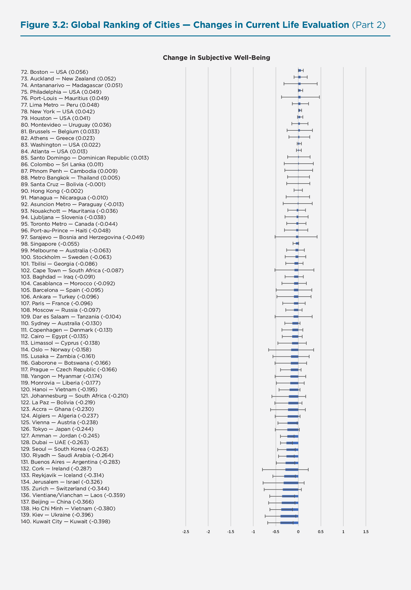
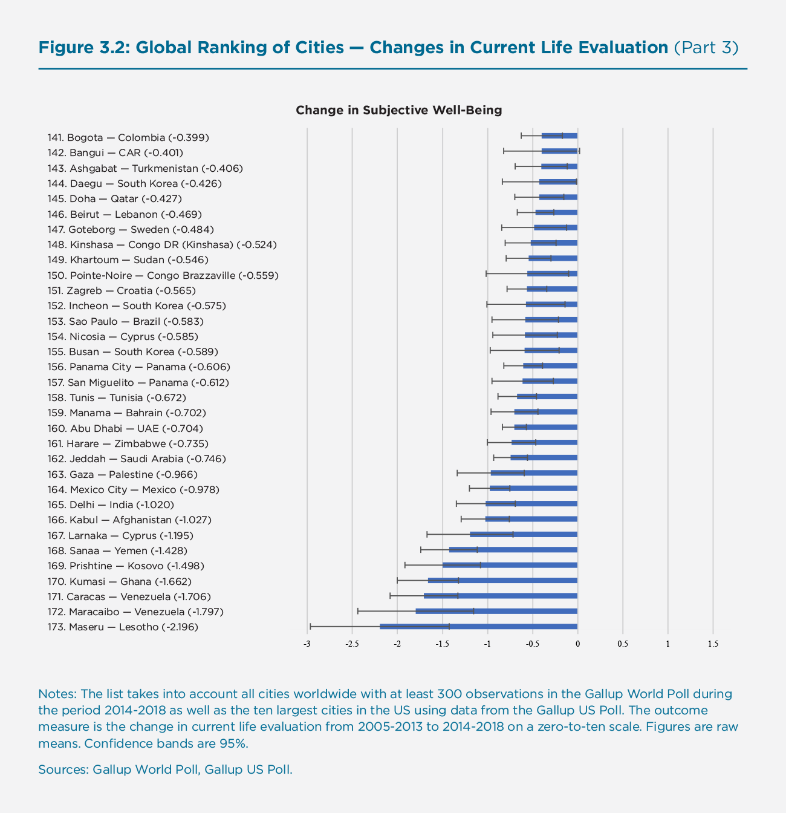
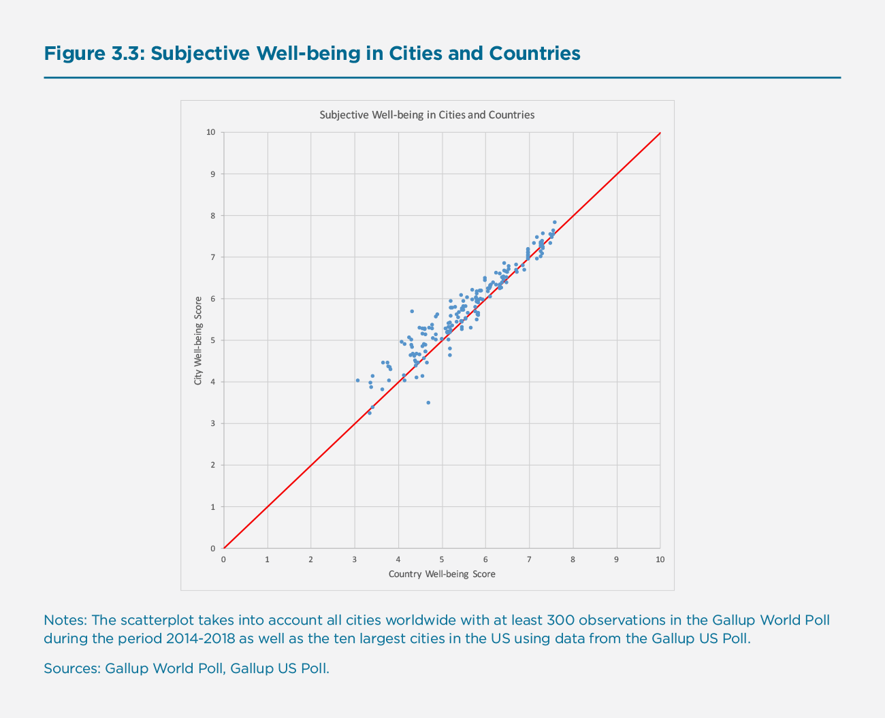
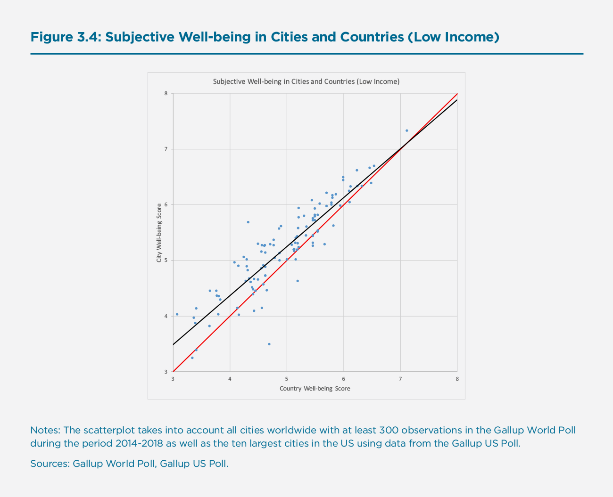
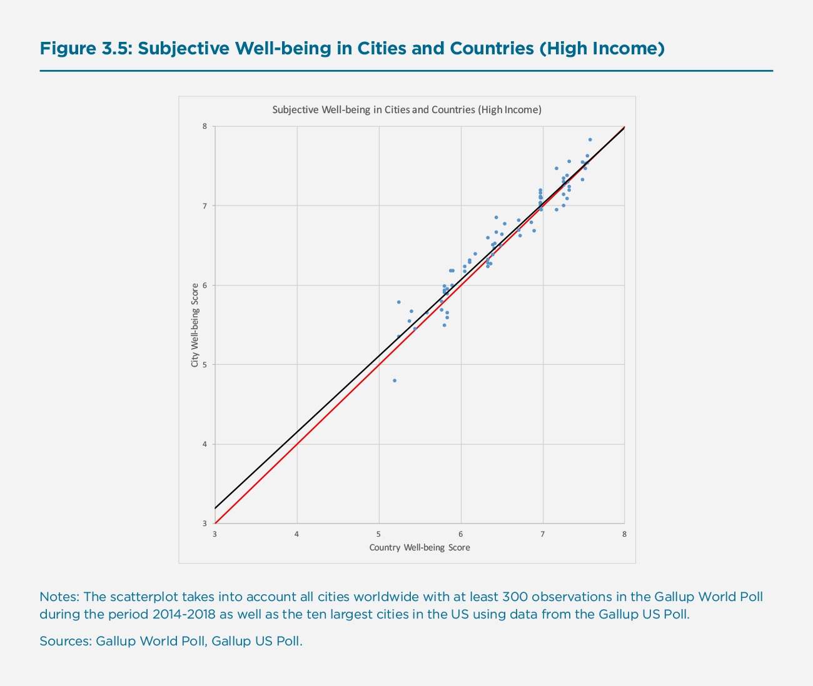
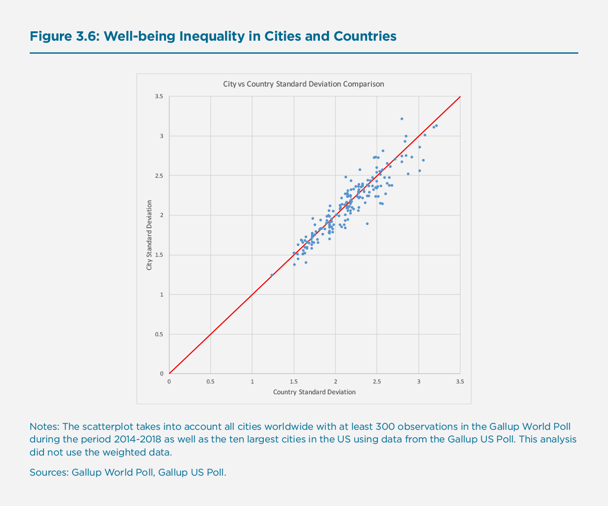

Cities and Happiness: A Global Ranking and Analysis
Introduction
About 4.2 billion people, more than half of the world’s population (55.3 per cent), are living in urban areas today. By 2045, this figure is estimated to increase by 1.5 times, to more than six billion.[1] There were 371 cities with more than one million inhabitants at the turn of the century in 2000. In 2018, there were 548, and in 2030, a projected 706 cities will have at least one million inhabitants. During the same time, the number of so-called mega cities – cities that have more than ten million inhabitants, most of which are located in the Global South – is expected to increase from 33 to 43, with the fastest growth in Asia and Africa. Today, Tokyo (37.4 million), New Delhi (28.5 million), and Shanghai (25.6 million inhabitants) are the most populous cities worldwide.[2]
Cities are economic powerhouses: more than 80 per cent of worldwide GDP is generated within their boundaries.[3] They allow for an efficient division of labour, bringing with them agglomeration and productivity benefits, new ideas and innovations, and hence higher incomes and living standards. They often outperform their countries in terms of economic growth.[4] City dwellers are often younger, more educated, and more liberal than their rural counterparts. They are more likely to be in professional and service jobs, and less likely to have kids. With urbanisation set to increase, by 2050, seven in ten people worldwide will be city dwellers.
Rapid urbanisation, however, also imposes challenges: a lack of affordable housing results in nearly one billion urban poor living in informal settlements at the urban periphery, vulnerable and often exposed to criminal activity. A lack of public transport infrastructure results in congestion and often hazardous pollution levels in inner cities. By one estimate, in 2016, 90 per cent of city dwellers have been breathing unsafe air, resulting in 4.2 million deaths due to ambient air pollution.[5] Cities account for about two-thirds of the world’s energy consumption and for more than 70 per cent of worldwide greenhouse gas emissions. Urban sprawl and inefficient land use contribute to biodiversity loss.[6] Rapid urbanisation also puts pressure on public open spaces such as parks and urban green areas, which provide space for social interaction and important ecosystem services.[7][8]
Given the speed and scale of urbanisation, with all its benefits and challenges, how do city dwellers fare, on balance, when it comes to their subjective well-being? How did their well-being change over time? Which cities around the world promote a higher well-being amongst their inhabitants than others, conditional on the same development level? And how does well-being and well-being inequality within cities relate to that within countries? This chapter explores these questions, by providing the first global ranking of cities based on their residents’ self-reported well-being.
Our ranking is fundamentally different from existing rankings of cities in terms of quality of life, such as The Economist’s Global Liveability Index, which ranks cities according to a summary score constructed from qualitative and quantitative indicators across five broad domains.[9] Rather than relying on a list of factors that researchers consider relevant, our ranking relies on city residents’ self-reports of how they themselves evaluate the quality of their lives. In doing so, it emancipates respondents to consider and weigh for themselves which factors – observable or unobservable to researchers – they feel matter most to them. Arguably, this bottom-up approach gives a direct voice to the population as opposed to the more top-down approach of deciding ex-ante what ought to matter for the well-being of city residents. Importantly, leveraging well-being survey responses is an approach that allows us to get a more holistic grip on the drivers of happiness. In fact, employing well-being surveys allows to figure out the relative importance of different domains in shaping well-being, thus providing evidence-based guidance for policymakers on how to optimize the well-being of their populations.
The importance of cities for global development has long been recognised in Sustainable Development Goal (SDG) 11, Sustainable Cities and Communities, which includes targets with clear relevance for citizens’ life satisfaction, such as strengthening public transport systems to reduce congestion and commuting times,[10] reducing ambient air pollution,[11] and improving access to green and public open spaces[12] for all citizens.[13][14] Our chapter aims to make an important contribution to benchmarking progress towards this goal and its targets in an integrated fashion by studying the current state of how cities are actually doing when it comes to their citizens’ subjective well-being and, in doing so, by casting an anchor for continuous future benchmarking.
In what follows, we first describe the methodology behind our ranking and present our findings on cities’ happiness around the world. Then, we analyse whether and how cities’ happiness has changed during the past decade, whether there exist significant differences between cities and their countries, and whether there are substantial happiness inequalities within cities relative to countries.
Ranking Cities’ Happiness Around the World
Methodology
As is the case for the ranking of countries in this World Happiness Report, our ranking of cities’ happiness around the world relies on the Gallup World Poll, an annual survey that started in 2005 and that is conducted in more than 160 countries covering 99 per cent of the world’s population. It includes at least 1,000 observations per country per year, covering both urban and rural areas, with a tendency to oversample major cities. The survey is nationally representative of the resident population aged 15 and above in each country. To increase sample size for the US, we complement the data with the Gallup US Poll, a survey which sampled US adults aged 18 and above nationwide between 2008 and 2017.[15] It included at least 500 observations per day and, importantly, asked respondents a similar set of questions as does the Gallup World Poll. To ensure that it is appropriate to merge the data coming from different surveys, we calculated the 2014-2018 average current life evaluation score for the Gallup US Poll and the World Poll, and found them to be almost identical: 6.96 for the US Poll and 6.97 for the World Poll. This and other checks make it possible to integrate the Gallup US Poll data without the need for re-scaling.[16]
In line with the methodology of the World Happiness Reports, our main outcome is current life evaluation, obtained from the so-called Cantril ladder, which is an item asking respondents to imagine themselves on a ladder with steps numbered from zero at the bottom to ten at the top, where zero represents the worst possible and ten the best possible life.[17] While life evaluation is our primary measure of subjective well-being, we also take into account well-being measures of how people experience their lives on a day-to-day basis.[18] To do so, we turn again – in line with the methodology applied in the World Happiness Reports – to the Gallup World Poll and the Gallup US Poll, which include items on positive and negative affect, constructed from batteries of yes-no questions that ask respondents about their emotional experiences on the previous day. For positive affect, we include whether respondents experienced enjoyment and whether they smiled or laughed a lot.[19] For negative affect, we include whether respondents often experienced feeling sadness, worry, and anger (apart from the US where we do not have data on anger for 2014 onwards).[20] Indices are then created by averaging across items, and are bound between zero and one. Finally, to elicit respondents’ expectations about their future, we look at future life evaluation, which is a future-oriented Cantril ladder survey item asking respondents where they think that they will stand in terms of their quality of life in five years from now.
We restrict our analysis to the period 2014 to 2018 and in order to reduce statistical noise, to cities with at least 300 observations recorded during this five-year span. Leveraging the US Poll, we added the ten largest American cities. Our definition of what constitutes a city (for the US) is based on the notion of functional urban areas: territorial and functional units with a population of a particular size in which people live, work, access amenities, and interact socially. It is preferable over definitions of cities based on, say, administrative boundaries, in that it is much more representative of the life realities of most people living in a city. Taken together, our methodological approach leads our ranking of cities’ happiness to cover 186 cities across the globe.
Ranking
In our ranking of cities’ happiness around the world, we first look at current life evaluation – an evaluative measure of subjective well-being and our main outcome – and then contrast our findings with those on expected future life evaluation of cities’ inhabitants. We also compare our findings with those on positive and negative affect on a day-to-day basis, which are experiential measures, in the follow-up discussion section.
Current Life Evaluation
Figure 3.1 shows the complete list of cities according to how positively their inhabitants currently evaluate their lives on average.
Figure 3.1: Global Ranking of Cities — Current Life Evaluation (Part 1)

Figure 3.1: Global Ranking of Cities — Current Life Evaluation (Part 2)

Figure 3.1: Global Ranking of Cities — Current Life Evaluation (Part 3)

As can be seen in Figure 3.1, the top ten are clearly dominated by Scandinavian cities: Helsinki (Finland) and Aarhus (Denmark) are ranked first and second, Copenhagen (Denmark), Bergen (Norway), and Oslo (Norway) fifth, sixth, and seventh. Stockholm (Sweden) comes out ninth. Thus, more than half of the top ten cities worldwide according to how positively their inhabitants currently evaluate their lives are located in Scandinavia. Two of the top ten cities are located in Australia and New Zealand: Wellington, the capital of New Zealand, is ranked third and Brisbane (Australia) is ranked tenth. The only top ten cities that are not located in either Scandinavia or Australia and New Zealand are Zurich (Switzerland) and Tel Aviv (Israel).
Figure 3.1 also shows that the bottom ten cities are less clustered geographically, but more correlated in terms of common themes. Although most cities at the bottom are located in some of the least developed countries worldwide, mostly in Africa and the Middle East (with India as a notable exception), they are distinct from other less developed countries around the world by having experienced recent histories of war (Kabul in Afghanistan and Sanaa in Yemen, which are at the very bottom of our global ranking); continuous armed conflict (Gaza in Palestine, which comes third from the bottom); civil war (Juba in South Sudan comes fifth, Bangui in the Central African Republic ninth); political instability (Cairo in Egypt comes tenth from the bottom); or devastating natural catastrophes with long-run impacts (Port-au-Prince in Haiti comes fourth from the bottom).
Besides their low economic development levels, therefore, these cities are also located in countries with high political instability, a strained security situation, and reoccurring periodic outbreaks of armed conflict. The impacts of (threat of) war, armed conflict, and terrorism on subjective well-being are well-documented in the literature.[21]
The other cities in the bottom ten according to how positively their inhabitants evaluate their current lives are Dar es Salaam in Tanzania (which comes sixth from the bottom), New Delhi in India (which comes seventh), and Maseru in Lesotho (which comes eighth).
Expected Future Life Evaluation
Figure A1 in Appendix replicates Figure 3.1, but reports on expected future rather than current life evaluation. It presents our global ranking of cities according to how positively their inhabitants evaluate their expected future lives, as raw means.
Although the top ten according to how cities’ inhabitants evaluate their expected future lives feature familiar faces such as Aarhus (Denmark), Copenhagen (Denmark), and Helsinki (Finland), which rank sixth, seventh, and eighth, and which also feature in the top ten of current life evaluation (ranking second, fifth, and first, respectively), it is fascinating to see that the top ten in terms of optimistic outlook also includes new cities. Many of them originate from Latin America and the Caribbean, as well as many regions in Africa. In fact, places two, three, and five in terms of future life evaluation are populated by San Miguelito (Panama), San Jose (Costa Rica), and Panama City (Panama), whereas places four and ten are populated by Accra (Ghana) and Freetown (Sierra Leone). The most optimistic outlook is found in Tashkent (Uzbekistan). The finding for optimism of city dwellers in the Latin American and Caribbean region is mirrored by high levels of subjective well-being found in Latin American societies more generally. Atlanta (US) is also found in the top ten of optimistic future outlook.
While the top ten feature many new faces, the bottom ten feature rather familiar ones: city dwellers in Kabul (Afghanistan), Gaza (Palestine), and Port-au-Prince (Haiti) – places torn by recent war, continuous armed conflict, and devastating natural catastrophes – are the least optimistic worldwide. Sanaa in Yemen, another war-torn city, is ranked sixth, whereas Beirut in Lebanon (bordering Syria) is ranked fourth from the bottom. As with current life evaluation, New Delhi (India) scores rather low when it comes to the optimistic outlook of its inhabitants (ranked fifth from the bottom). Likewise, cities in Egypt (here Alexandria, which is ranked eighth from the bottom) are quite pessimistic places when it comes to the future, and so are cities located in Iran (Tehran, the capital, is ranked ninth and Mashhad is ranked tenth from the bottom). These are places that have seen economically difficult times recently. The only European city in the bottom ten cities of how positively their inhabitants evaluate their future lives is Athens in Greece, which may be explained by the recent economic crisis in the country.
Is there predictive power from these self-predicted future scores? To check this, we regress current life evaluation on life evaluation scores pre-2014 and expected life evaluation scores pre-2014. In this multivariate regression, we find that life evaluation scores pre-2014 are highly significant, while expected future life evaluation scores pre-2014 are not significant. Even when doing a univariate regression of current life evaluation scores on expected life evaluation only, we find that it is not significant. This perhaps shows that people are not quite able to accurately predict their future life evaluation and the best indicator of the future is current life evaluation.
Positive and Negative Affect
Whereas life evaluation is a cognitive-evaluative measure of subjective well-being that asks respondents to evaluate their lives relative to an ideal life, positive and negative affect are experiential measures that ask respondents to report on their emotional experiences on the previous day. They are thus less prone to social narratives, comparisons, or issues of adaptation and anticipation. Contrary to life evaluation, they also take into account the duration of experiences, arguably an important dimension when it comes to people’s overall quality of life. Figure A2 in the Appendix replicates our global ranking of city happiness for positive affect, Figure A3 for negative affect.
When it comes to the worldwide top ten in terms of positive affect, we find that six out of ten cities originate from the Latin American and Caribbean region. For some of these places, these scores may come as a surprise, given the difficult economic situations in the countries in which these cities are located. Yet to some extent this finding mirrors our finding on expected future life evaluation: city dwellers in the Latin American and Caribbean region are not only looking more optimistically into the future than their current levels of life evaluation would predict, but also report higher levels of momentary happiness and joy. The generally high level of affective well-being in the region is well-documented in the literature[22] and may be due to, for example, stronger family relationships, social capital, and culture-related factors. Note that since the Gallup World Poll is nationally representative, it is unlikely that self-selection of survey respondents who are exceptionally happy are driving our results.
We find cities in areas that are in current or past conflict zones at the bottom in terms of positive affect. Somewhat surprising is the large number of Turkish city dwellers reporting low positive affect, including people living in Ankara, Istanbul, and Izmir. Perhaps less surprising, most cities that score low on positive affect also score high on negative affect, as seen in Figure A3.
Further Analysis
Changes Over Time
So far, our global ranking of cities’ happiness has looked at a snapshot of happiness, taken as the average happiness across the period 2014 to 2018. Naturally, the question arises how cities’ happiness has changed over the years. To answer this question, in Figure 3.2 we calculate the change in life evaluation for each city against its average life evaluation in the period 2005 to 2013. The Gallup World Poll was initiated in 2005, which is the earliest possible measurement we can use for our purposes.
Figure 3.2: Global Ranking of Cities — Changes in Current Life Evaluation (Part 1)

Figure 3.2: Global Ranking of Cities — Changes in Current Life Evaluation (Part 1)

Figure 3.2: Global Ranking of Cities — Changes in Current Life Evaluation (Part 1)

Some cities have experienced significant positive changes in their citizens’ happiness over the past decade: changes above 0.5 points in life evaluation, which is measured on a zero-to-ten scale, can be considered very large changes; a change of 0.5 points is approximately the change when finding gainful employment after a period of unemployment.[23] The top ten cities in our global ranking in terms of change have experienced changes of 0.75 points or more. They are predominantly in Africa, Eastern Europe, or Central Asia. The city with the largest positive change is Abidjan (Ivory Coast). Other cities that have experienced large positive changes in Africa are Cotonou (Benin), Dakar (Senegal), Conakry (Guinea), Niamey (Niger), and Brazzaville (Congo), which are ranked fifth, seventh, eighth, ninth, and tenth in our global ranking of changes. Dushanbe (Tajikistan) and Almaty (Kazakhstan) – two former Soviet republics located in Central Asia – are ranked second and fourth, respectively. Strong improvements are also found in Vilnius (Lithuania) and Sofia (Bulgaria), two capital cities in countries that are now part of the European Union. Other cities in or at the fringes of the European Union that have made substantial progress (of 0.5 or more points on the zero-to-ten life evaluation scale) are Riga (Latvia), ranked 13, Belgrade (Serbia), ranked 17, Bucharest (Romania), ranked 22, and Budapest (Hungary), ranked 23.
While some cities have experienced large increases in their citizens’ happiness over the past decade, others have experienced tremendous reductions, often by more than an entire point on the zero-to-ten life evaluation scale. The strongest reduction is found in Maseru, the capital of Lesotho, which has seen current life evaluation decrease by more than two points. Maracaibo and Caracas, the second largest city and the capital of Venezuela, are placed second and third from the bottom, respectively. Other cities that have seen large decreases are Pristina (Kosovo), Sanaa (Yemen), and Kabul (Afghanistan), which come fifth, sixth, and seventh from the bottom, respectively. Perhaps less surprising, most of these cities – together with New Delhi (India), ranked ninth, and Mexico City (Mexico), ranked tenth from the bottom – also score low when it comes to expected future life evaluation. People living in these cities are not optimistic about their future. Somewhat new on the radar are Kumasi (Ghana) and Larnaka (Cyprus), which have also experienced strong reductions in happiness over the past decade.
In sum, there have been winners and losers in terms of changes in cities’ happiness over the past decade. On a global scale, has happiness in cities increased or decreased? On average, there has been a decrease in mean city happiness over the past decade. However, this decrease is driven by very strong reductions in city happiness at the very bottom of our global ranking. If we were to exclude Maseru (Lesotho), Maracaibo and Caracas (both Venezuela), Sanaa (Yemen), Kabul (Afghanistan), and Gaza (Palestine) – cities which have been facing exceptional challenges – from our global ranking, we could say that happiness in cities worldwide has increased in recent years.
City-Country Differences
Another interesting question is whether or not our global ranking of cities is determined by something different than the mean happiness of the counties in which they are located. One way of testing this is to use country mean happiness scores to predict city rankings, and then to look for significant outliers. As Figure 3.3 suggests, residents of cities are somewhat happier than the mean happiness of their respective country populations suggests. This global difference amounts to, on average, 0.2 points on the zero-to-ten life evaluation scale. What stands out from this analysis, however, is that this difference is greater for city residents at the lower end of the well-being scale before it diminishes and often reverses at the top-end: residents of cities at the lower end are about 0.5 points happier than the average populations in their respective countries. This observation appears to corroborate Morrison’s model, which suggests such a skewed relationship for reasons that are considered in more detail in chapter 4 of this report.[24]
Figure 3.3: Subjective Well-being in Cities and Countries

Following Morrison, we split the sample into high-income and low-income countries in order to get a better sense for the different slopes in the relationship between city residents’ happiness and their respective country average happiness.[25] Figures 3.4 and 3.5 illustrate these different slopes at different levels of economic development: for low-income city-country pairs we can confidently reject the hypothesis that the line of best fit shown in Figure 3.4 is the same as the 45-degree line (F-test = 35.72). The same is not the case for the line of best fit in Figure 3.5, which relates to high-income city-country pairs. Here, we cannot statistically distinguish it from the 45-degree line (F-test = 3.59). These results imply that the average country happiness is a very strong predictor of city happiness at higher levels of well-being and economic development. However, this is somewhat less the case for countries at lower levels. In fact, while the general correlation coefficient between country-city pairs stands at 0.96, the correlation coefficient is slightly lower at 0.90 for the low-income group.
Figure 3.4: Subjective Well-being in Cities and Countries (Low Income)

Figure 3.5: Subjective Well-being in Cities and Countries (High Income)

Generally, we find that the average happiness of city residents is more often than not higher than the average happiness of the general country population, especially at the lower end of the well-being and national income scales. Thus, when contrasting the positive agglomeration and productivity benefits of urbanisation and urban amenities with its disadvantages due to disamenities such as congestion or pollution, it seems that, on balance, city dwellers fare slightly better than the remainder of the population, at least when it comes to current life evaluation as our measure of comparison. Of course, this does not mean that moving into a city makes everybody happier: people living in cities differ in important observable and unobservable characteristics from their rural counterparts, which could very well explain the difference in happiness that we observe. Our analysis is purely descriptive and cannot make causal claims about the effects of urbanisation itself on happiness.
Well-being Inequality in Cities and Countries
A related question asks not so much whether cities are, on average, happier places than their surrounding countries, but rather whether happiness inequality is different within cities as compared to countries. In other words: is the difference between the least happy and the happiest person, on average, greater or smaller in cities than in their respective countries?
Figure 3.6 sheds light on this question by plotting the standard deviation of city happiness relative to the standard deviation of country happiness, both measured in terms of current life evaluation. The standard deviation is a measure of how dispersed a set of numbers is and can hence serve as a simple measure of inequality in this case. As before, the 45-degree line indicates the points at which there is no difference between the standard deviation in country and city happiness scores. If a city lies above the 45-degree line, it has a higher level of happiness inequality than its respective country; if it lies below, it has a lower level.
Figure 3.6: Well-being Inequality in Cities and Countries

As Figure 3.6 shows, the scatterplot is almost evenly spread around the 45-degree line, suggesting that there are no systematic differences in happiness inequality between cities and their countries. In other words, the difference between the least happy and the happiest person is, on average, not much different in cities than in the country at large. Of course, this does not mean that there are large differences on a case-by-case basis: in fact, for some cities and countries, happiness inequality is much larger at the country-level, whereas for others, it is much larger at the city-level. This is an important area for future research, with important policy implications for urbanisation and rural exodus.
Conclusion
In this chapter, we provided the first-ever global ranking and analysis of cities’ happiness. Allowing for an efficient division of labour, cities bring with them agglomeration and productivity benefits, inspiring new ideas and innovations, and the generation of higher incomes and living standards. At the same time, however, cities create negative externalities such as urban sprawl, crime, congestion, and often hazardous pollution levels. As half of the world’s population is living in cities today, and since this number is expected to rise to two third by the middle of the century, studying how city dwellers fare on balance when it comes to their quality of life is an important undertaking. Casting an anchor, and continuously monitoring and benchmarking city dwellers’ quality of life around the world, is also an important step towards implementing Sustainable Development Goal (SDG) 11: Sustainable Cities and Communities.
We rank cities’ quality of life fundamentally differently than existing rankings: our ranking relies entirely on city dwellers’ self-reported quality of life, measured in terms of their subjective well-being. One might criticise our ranking for relying only on subjective indicators. We argue that this is precisely their advantage. We are not relying on a limited number of objective dimensions of quality of life, often defined ex-ante according to what researchers (or policy-makers) consider important. Instead, our ranking is bottom up, emancipating city dwellers to consider for themselves which factors they feel matter most to them. Arguably, this makes it also a more democratic way of measuring their quality of lives.
Our ranking of cities’ happiness does not yield fundamentally different results than existing rankings: Scandinavian cities and cities in Australia and New Zealand score high when it comes to the subjective well-being of their residents; cities in countries with histories of political instability, (civil) war, armed conflict, and recent incidences of terrorism score low. Deploying a diverse set of subjective well-being indicators, including evaluative measures such as current and future life evaluation as well as experiential measures such as positive and negative affect, our ranking paints an internally consistent image. Yet, there are significant differences to other rankings relying on pre-defined dimensions of quality of life. Studying these differences about what matters most for city residents’ quality of life is—besides a continuous monitoring and benchmarking of cities’ happiness around the world—an important next step.
References
Adler, M. D., Dolan, P. and Kavetsos, G. (2017) “Would you choose to be happy? Tradeoffs between happiness and the other dimensions of life in a large population survey,” Journal of Economic Behavior & Organization, 139, 60-73.
Ambrey, C. L., Fleming, C. M. and Chan, A. Y.-C. (2014a) “Estimating the cost of air pollution in South East Queensland: An application of the life satisfaction non-market valuation approach,” Ecological Economics, 97, 172-181.
Ambrey, C., and Fleming, C. (2014b) “Public Greenspace and Life Satisfaction in Urban Australia,” Urban Studies, 51(6), 1290-1321.
Bertram, C., and Rehdanz, K. (2015) “The role of urban green space for human well-being,” Ecological Economics, 120, 139-152.
Bertram, C., Goebel, J., Krekel, C., and Rehdanz, K. (2020) “Urban Land Use Fragmentation and Human Wellbeing,” Kiel Working Papers, 2147.
Clark, A. E., Flèche, Layard, S. R., Powdthavee, N., and Ward G. (2018) “The Origins of Happiness: The Science of Well-being Over the Life Course”, Princeton, NJ: Princeton University Press.
Clark, A. E., Doyle, O., and Stancanelli, E. (forthcoming) “The Impact of Terrorism on Well-being: Evidence from the Boston Marathon Bombing,” Economic Journal.
De Neve, J.-E., and Ward, G. (2017) “Happiness at Work,” in: Helliwell, J., Layard, R. and Sachs, J. (eds), World Happiness Report.
Dickerson, A., Hole, R. A., and Munford, L. A. (2014) “The relationship between well-being and commuting revisited: Does the choice of methodology matter?,” Regional Science and Urban Economics, 49, 321-329.
Dolan, P., and Kudrna, L. (2016) “Sentimental Hedonism: Pleasure, Purpose, and Public Poli-cy,” in: Vittersø, J. (ed), Handbook of Eudaimonic Well-Being, Cham: Springer.
Eibich, P., Krekel, C., Demuth, J., and Wagner, G. (2016) “Associations between Neighbor-hood Characteristics, Well-Being and Health Vary over the Life Course,” Gerontology, 62(3), 362-370.
European Commission (2013) “Building a Green Infrastructure for Europe”, Brussels: Publications Office of the European Union.
Frey, B. S., Luechinger, S., and Stutzer, A. (2007) “Calculating Tragedy: Assessing the Costs of Terrorism,” Journal of Economic Surveys, 21(1), 1-24.
Frey, B. S., Luechinger, S., and Stutzer, A. (2009) “The life satisfaction approach to valuing public goods: The case of terrorism,” Public Choice, 138, 317-345.
Graham, C., and Lora, E. (2009) “Paradox and Perception: Measuring Quality of Life in Latin America”, Washington, DC: Brookings Institution/Inter-American Development Bank.
Helliwell, J., Layard, R., and Sachs, J. (2019) World Happiness Report, New York: UN Sustainable Development Solutions Network.
Kilroy, A. F. L., Mukim, M. and Negri, S. (2015) “Competitive cities for jobs and growth: what, who, and how,” in: Competitive cities for jobs and growth, Washington, DC: World Bank Group.
Krekel, C., and Kolbe, J. (2020, forthcoming) “New Ways of Valuing Ecosystem Services: Big Data, Machine Learning, and the Value of Urban Green Spaces,” in: Ruth, M. (ed), Research Agenda for Environmental Economics, Cheltenham: Edward Elgar.
Krekel, C., Ward, G., and De Neve, J.-E. (2018) “Work and Well-being: A Global Perspective,” in: Sachs, J. (ed), Global Happiness and Well-Being Policy Report.
Krekel, C., Kolbe, J. and Wüstemann, H. (2016) “The greener, the happier? The effect of urban land use on residential well-being,” Ecological Economics, 121, 117-127.
Kuehn, S., Duezel, S., Eibich, P., Krekel, C., Wüstemann, H., Kolbe, J., Martensson, J., Goebel, J., Gallinat, J., Wagner, G. G., and Lindenberger, U. (2017) “In search of features that constitute an ‘enriched environment’ in humans: Associations between geographical properties and brain structure,” Nature: Scientific Reports, 7(11920), 1-8.
Loschiavo, D., (2019) “Big-city life (dis)satisfaction? The effect of urban living on subjective well-being,” Bank of Italy Working Paper, 1221.
Metcalfe, R., Powdthavee, N., and Dolan, P. (2011) “Destruction and Distress: Using a Quasi‐Experiment to Show the Effects of the September 11 Attacks on Mental Well‐Being in the Unit-ed Kingdom,” Economic Journal, 121(550), 81-103.
Morrison, P.S. (2018). Resolving the urban paradox: subjective well-being, education and the big city. Promotion of quality of life in the changing world. 16th annual meeting of the International Society for Quality-of-Life Studies. The Hong Kong Polytechnic University, Kowloon, Hong Kong.
Rojas, M. (2016) “Handbook of Happiness Research in Latin America”, Berlin: Springer.
Stutzer, A., and Frey, B. S. (2008) “Stress that Doesn’t Pay: The Commuting Paradox,” Scandinavian Journal of Economics, 110(2), 339-366.
The World Bank (2019a) Urban Development, Online: http://data.worldbank.org/topic/urban-development, last accessed 11/12/2019.
The World Bank (2019b), Urban Development Overview, Online: http://www.worldbank.org/en/topic/urbandevelopment/overview, last accessed 12/12/2019.
The World Bank (2020) World Bank Country and Lending Groups, Online: http://datahelpdesk.worldbank.org/knowledgebase/articles/906519-world-bank-country-and-lending-groups, last accessed 13/01/2020.
The Economist Intelligence Unit (2019), The Global Liveability Index, Online: http://www.eiu.com/topic/liveability?zid=liveability2019&utm_source=economist-daily-chart&utm_medium=link&utm_name=liveability2019, last accessed 12/12/2019.
Tost, H., Champagne, F. A., and Meyer-Lindenberg, A. (2015) “Environmental influence in the brain, human welfare and mental health,” Nature: Neuroscience, 18, 1421-1431.
United Nations (2018) The World’s Cities in 2018: Data Booklet, New York: United Nations, Department of Economic and Social Affairs, Population Division.
United Nations (2019), Cities – United Nations Sustainable Development Action 2015, Online: http://www.un.org/sustainabledevelopment/cities/, last accessed 12/12/2019.
van Os, J., Kenis, G. and Rutten, B. P. F. (2010) “The environment and schizophrenia,” Nature, 468, 203-212.
van Praag, B. M. S., Romanov, D., and Ferrer-i-Carbonell, A. (2010) “Happiness and financial satisfaction in Israel: Effects of religiosity, ethnicity, and war,” Journal of Economic Psychology, 31(6), 1008-1020.
White, M. P., Alcock, I., Wheeler, B. W., and Depledge, M. H. (2013) “Would You Be Happier Living in a Greener Urban Area? A Fixed-Effects Analysis of Panel Data,” Psychological Science, 24(6), 920-928.
Zhang, X., Zhang, X., and Chen, X. (2017) “Happiness in the air: How does a dirty sky affect mental health and subjective well-being,” Journal of Environmental Economics and Management, 85, 81-94, 2017.
Endnotes
See The World Bank (2019a). ↩︎
See United Nations (2018). ↩︎
See The World Bank (2019a). ↩︎
See Kilroy et al. (2015). ↩︎
See United Nations (2019). ↩︎
See The World Bank (2019b). ↩︎
See European Commission (2013). ↩︎
In psychology, there is a large and growing stream of literature looking at how our environment affects our brain structure and function, suggesting that more ‘enriched’ environments that are more complex and provide more stimulation facilitate brain plasticity (see Kuehn et al. (2017) on urban land use). While urban ‘richness’ may promote brain development, several studies suggest that liv-ing in denser urban environments is associated with lower mental health and certain mental health conditions (Tost et al., 2015; van Os et al., 2010). ↩︎
See The Economist Intelligence Unit (2019). ↩︎
See, for example Stutzer and Frey (2008), Dickerson et al. (2014), and Loschiavo (2019). ↩︎
See, for example Luechinger (2009), Levinson (2012), Ferreira et al. (2013), Ambrey et al. (2014a),and Zhang et al. (2017). ↩︎
See, for example, White et al. (2013) Ambrey and Fleming (2014b), Bertram and Rehdanz (2015), Krekel et al. (2016), and Bertram et al. (2020). ↩︎
See United Nations (2019). ↩︎
By referring to “all citizens”, SDG 11 makes an explicit reference to being inclusive, which is an important point as evidence shows that urban amenities and disamenities are of differential importance for citizens with different socio-demographic characteristics (see Eibich et al. (2016), for example). ↩︎
Included US cities are Atlanta, Boston, Chicago, Dallas, Houston, Los Angeles, Miami, New York, Philadelphia, and Washington DC. The choice of cities was motivated by selecting the ten largest US cities, all of which have well over 300 observations in the US Poll. ↩︎
We investigated whether there are systematic differences in responses to the Gallup World Poll and the Gallup US Poll surveying of the Cantril ladder. Out of the 12 US cities that are included in the 2014-2018 World Poll, seven are also in the top ten list of cities that we obtain from the US Poll. Out of these seven cities, the scores for six of the cities in the US Poll fall within the statistical confidence intervals of the World Poll scores (Chicago, Dallas, Houston, Miami, New York City, and Philadelphia). For Los Angeles, however, we find that the US Poll score is significantly higher (6.96) than the World Poll score (6.36). However, these and other tests are based on very few observations in the World Poll even when pooling the 2014-2018 samples (e.g. there are only 87 observations for Los Angeles). Since there is no systematic bias upwards or downwards when comparing city scores between both surveys, and especially because the Gallup US Poll score and the Gallup World Poll score are essentially identical, we merge the US Poll with the World Poll data without the need for any adjustments. ↩︎
If not stated otherwise, we use the terms life evaluation, life satisfaction, and happiness interchangeably. ↩︎
See Dolan (2014) and Dolan and Kudrna (2016). ↩︎
Note that the ‘happiness’ survey item is no longer available after 2012 so that the index is comprised of ‘enjoyment’ and ‘smile or laugh’ from 2012 onwards. ↩︎
For the US cities, we use the Gallup US Poll in exactly the same way as the Gallup World Poll, with the sole exception of not including ‘anger’ as part of the negative affect index because it is un-available in the US Poll. ↩︎
For example, see Frey et al. (2007, 2009), van Praag et al. (2010), and Metcalfe et al. (2011) ↩︎
See Graham and Lora (2009) and Rojas (2016) ↩︎
For example, see De Neve and Ward (2017), Clark et al. (2018), Krekel et al. (2018) ↩︎
See Morrison (2018) ↩︎
We split our sample into low-income and high-income countries based on the World Bank’s categorization of low, lower middle, upper middle, and high-income countries. High-income countries are considered those with a GNI per capita of $12,376 or more (World Bank, 2020). ↩︎